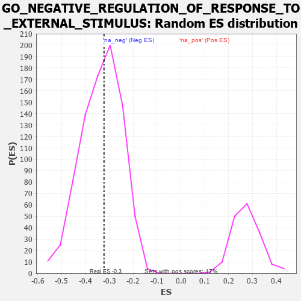

| | | Dataset | 7d |
| Phenotype | NoPhenotypeAvailable |
| Upregulated in class | na_neg |
| GeneSet | GO_NEGATIVE_REGULATION_OF_RESPONSE_TO_EXTERNAL_STIMULUS |
| Enrichment Score (ES) | -0.3224321 |
| Normalized Enrichment Score (NES) | -0.9662434 |
| Nominal p-value | 0.5192771 |
| FDR q-value | 0.9056729 |
| FWER p-Value | 1.0 |
Table: GSEA Results Summary
 Fig 1: Enrichment plot: GO_NEGATIVE_REGULATION_OF_RESPONSE_TO_EXTERNAL_STIMULUS
Fig 1: Enrichment plot: GO_NEGATIVE_REGULATION_OF_RESPONSE_TO_EXTERNAL_STIMULUS
Profile of the Running ES Score & Positions of GeneSet Members on the Rank Ordered List
| PROBE | GENE SYMBOL | GENE_TITLE | RANK IN GENE LIST | RANK METRIC SCORE | RUNNING ES | CORE ENRICHMENT | | 1 | FOXF1 | | | 176 | 1.136 | 0.0287 | No |
| 2 | DCST1 | | | 237 | 0.959 | 0.0641 | No |
| 3 | HGF | | | 276 | 0.870 | 0.0983 | No |
| 4 | CNOT7 | | | 348 | 0.750 | 0.1229 | No |
| 5 | PDCD4 | | | 941 | 0.497 | 0.0705 | No |
| 6 | BACE1 | | | 1673 | 0.360 | -0.0057 | No |
| 7 | ABR | | | 1812 | 0.335 | -0.0081 | No |
| 8 | C1QBP | | | 2189 | 0.278 | -0.0431 | No |
| 9 | MIF | | | 2357 | 0.252 | -0.0529 | No |
| 10 | SLIT2 | | | 2724 | 0.195 | -0.0904 | No |
| 11 | RORA | | | 2730 | 0.193 | -0.0824 | No |
| 12 | WNT4 | | | 3023 | 0.146 | -0.1127 | No |
| 13 | PROS1 | | | 3070 | 0.141 | -0.1122 | No |
| 14 | GPX1 | | | 3109 | 0.135 | -0.1109 | No |
| 15 | SMAD3 | | | 3303 | 0.105 | -0.1306 | No |
| 16 | GPR18 | | | 3578 | 0.063 | -0.1624 | No |
| 17 | ABCD1 | | | 3677 | 0.047 | -0.1726 | No |
| 18 | SYT11 | | | 3732 | 0.036 | -0.1778 | No |
| 19 | FEM1A | | | 3847 | 0.021 | -0.1913 | No |
| 20 | VPS35 | | | 3989 | -0.006 | -0.2088 | No |
| 21 | ROBO2 | | | 4066 | -0.018 | -0.2176 | No |
| 22 | CHID1 | | | 4099 | -0.023 | -0.2206 | No |
| 23 | CRK | | | 4139 | -0.031 | -0.2241 | No |
| 24 | USF1 | | | 4296 | -0.059 | -0.2411 | No |
| 25 | CD109 | | | 4325 | -0.064 | -0.2418 | No |
| 26 | ADTRP | | | 4612 | -0.120 | -0.2725 | No |
| 27 | GATA3 | | | 4614 | -0.120 | -0.2673 | No |
| 28 | KLF4 | | | 5005 | -0.198 | -0.3076 | No |
| 29 | DRD2 | | | 5088 | -0.221 | -0.3080 | No |
| 30 | ASH1L | | | 5203 | -0.248 | -0.3113 | Yes |
| 31 | PTEN | | | 5262 | -0.261 | -0.3070 | Yes |
| 32 | EPHA4 | | | 5273 | -0.265 | -0.2963 | Yes |
| 33 | CD9 | | | 5319 | -0.277 | -0.2896 | Yes |
| 34 | GRIN1 | | | 5381 | -0.291 | -0.2843 | Yes |
| 35 | PPM1B | | | 5422 | -0.300 | -0.2759 | Yes |
| 36 | LRIG2 | | | 5460 | -0.310 | -0.2667 | Yes |
| 37 | PCBP2 | | | 5539 | -0.331 | -0.2617 | Yes |
| 38 | ADA | | | 5798 | -0.405 | -0.2761 | Yes |
| 39 | BBS4 | | | 5806 | -0.407 | -0.2588 | Yes |
| 40 | TKFC | | | 5854 | -0.419 | -0.2459 | Yes |
| 41 | GRID2 | | | 6170 | -0.528 | -0.2620 | Yes |
| 42 | BBS2 | | | 6383 | -0.608 | -0.2616 | Yes |
| 43 | DPP4 | | | 6501 | -0.663 | -0.2466 | Yes |
| 44 | OTOP1 | | | 6562 | -0.690 | -0.2233 | Yes |
| 45 | ROBO1 | | | 6577 | -0.699 | -0.1937 | Yes |
| 46 | PTPRS | | | 6646 | -0.738 | -0.1692 | Yes |
| 47 | CERS2 | | | 6689 | -0.756 | -0.1406 | Yes |
| 48 | GHSR | | | 6937 | -0.894 | -0.1317 | Yes |
| 49 | RYK | | | 7102 | -1.000 | -0.1076 | Yes |
| 50 | UFD1 | | | 7157 | -1.040 | -0.0678 | Yes |
| 51 | KLKB1 | | | 7216 | -1.090 | -0.0263 | Yes |
| 52 | GRN | | | 7319 | -1.194 | 0.0143 | Yes |
| 53 | NLRC3 | | | 7574 | -1.515 | 0.0501 | Yes |
Table: GSEA details [plain text format]

Fig 2: GO_NEGATIVE_REGULATION_OF_RESPONSE_TO_EXTERNAL_STIMULUS: Random ES distribution
Gene set null distribution of ES for GO_NEGATIVE_REGULATION_OF_RESPONSE_TO_EXTERNAL_STIMULUS